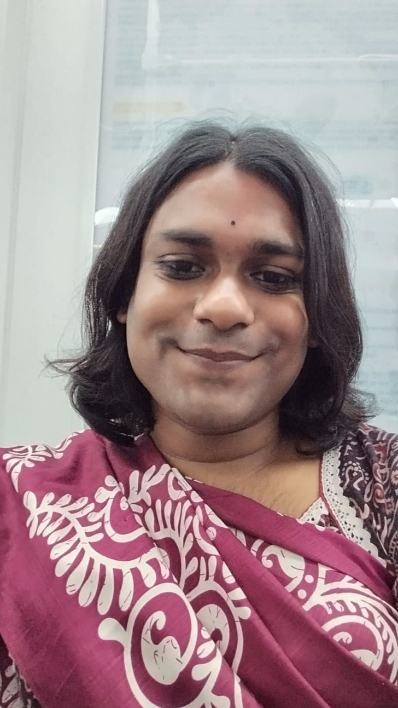

| Home | CV | Teaching | Publications |
|---|

I finished my integrated M.Sc in Mathematics from IISc, Bangalore, under the UG Programme in 2019. I have had a somewhat colorful career (and life), but mathematics has incidentally stayed with me. Mathematics shapes many aspects of modern scientific reasoning and engineering design, as well as how we see and understand the world around us and our social dynamics. Additionally, mathematics brings me joy, and I also hope to share it. I have taught mathematics at various levels, both in English and in Bangla, engaged with the public about it; as well as conducted mathematical research in various positions in various organizations. I am currently pursuing my PhD from TCG CREST, Kolkata under the guidance of Prof. Arpita Maitra.
My broad area of research is Quantum Information. I currently work on:
I am also particuarly interested in how, under group actions on quantum state-spaces, group cohomology can be used to describe sub-spaces of protected states. Well-studied examples of this include Kitaev's quantum double model of surface codes (also referred to as Group Surface codes) and the Gottesman-Kitaev-Preskill code.
I am more generally interested in geometry. What geometry is — does not have a very well-defined answer, sadly. And, I enjoy all the usual areas: Riemannian Geometry, Topology, Algebraic Topology, Algebraic Geometry, Lie Groups and Lie Algebras, Symplectic Geometry, Dynamical systems, Ergodic Theory. The only problem is that I'm hardly any good. So, like any self-respecting idiot — I use what I have learnt from geomtery (theorems, constructions, and intution) to try and solve some current and hopefully easy engineering problem. If you want to talk about such a problem, feel welcome to drop me an e-mail!